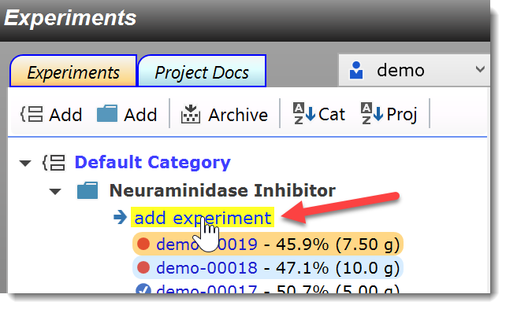
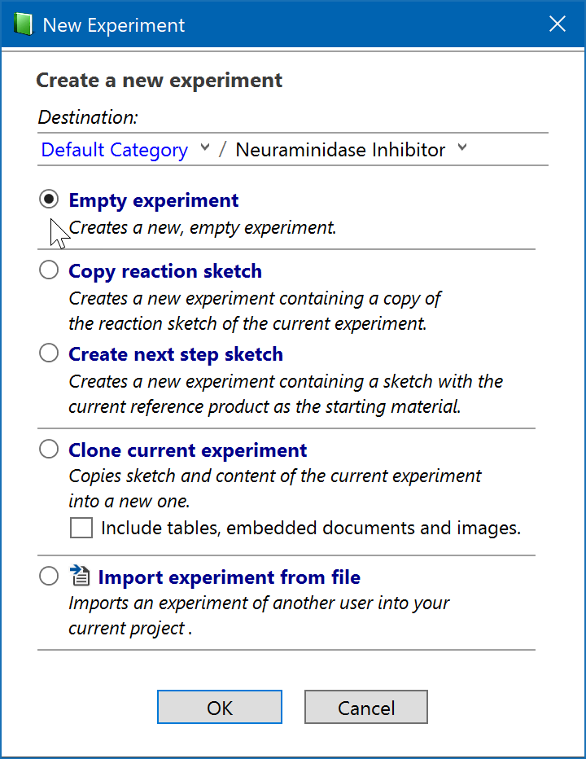
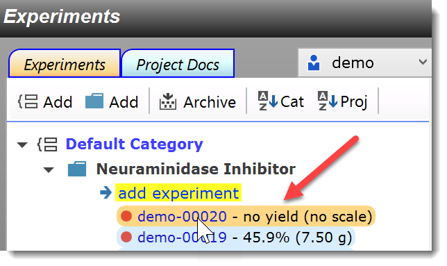

1) Create an Experiment
To add a new experiment to an existing project, first switch to the Experiments tab:
To the left side of this tab, you will see the the experiments tree, which contains all experiments organized into projects and project categories which will be discussed later. For now, just click the blue 'add experiment' link just below the project name:

This opens the selection dialog below, offering the option to create an empty experiment with various options to copy (clone) elements from the currently displayed experiment, or to create a next step sketch (contains the current sketch product as the new starting material):

For this tutorial, select the topmost "Empty Experiment" option, which allows us to demonstrate the entry of a reaction sketch into an empty experiment. Then click OK. A new experiment is created ("demo-00020" in this case):

The new experiment is highlighted in orange in the experiment tree, which means that it is the currently visible and active one. Blue highlighted ones mean that they are currently open, but located in a tab in the background. A red dot means that an experiment is in progress has not yet been digitally signed, i.e. finalized.
Next step: Create a reaction sketch ..